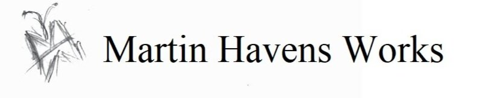
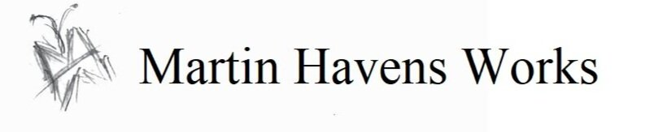

Homepage
University of North Florida mechanical engineering BSME ABET graduate
Western Governors University Computer Science BSCS current student
Ex-Ocean Rescue Volunteer Life Saving Corps Man, social-cause volunteer
Ex-Systems Engineer sub for Raytheon Missiles and Defense becoming a software Messiah (read as Jesus)
click me
don't click me
> lINkEdIn<
>
lINkEdIn<
> GITHub<

GITHub<

About
About - click here